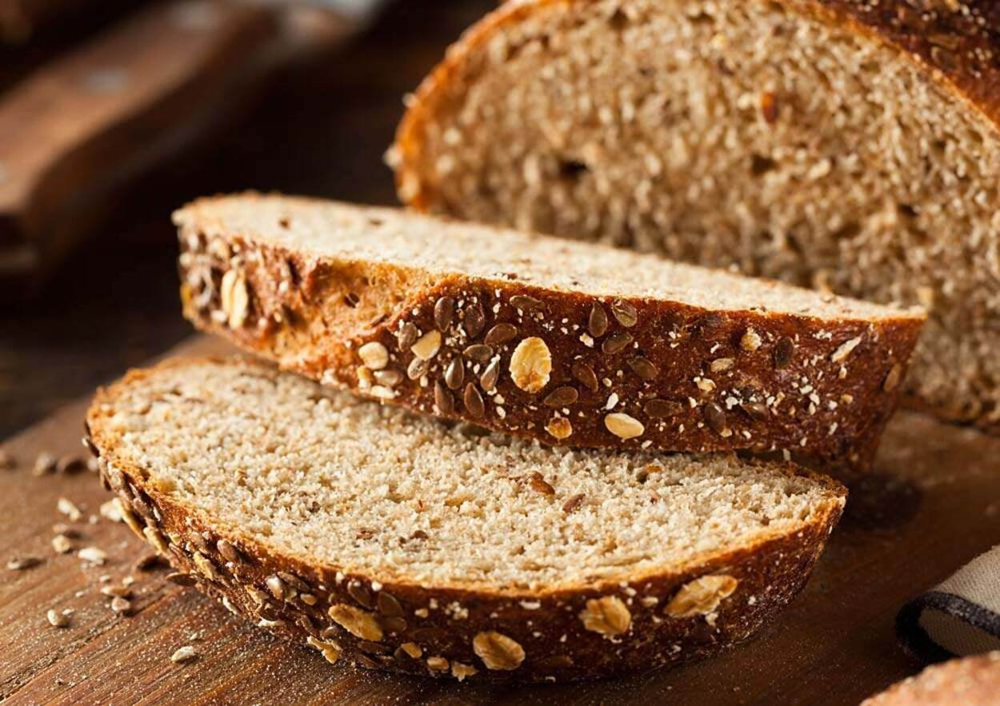

Salgados · Massas fritas/assadas
Pão integral

Ingredientes
- 3 colheres (sopa) de açúcar
- 2 tabletes (30 g) de fermento para pão
- 4 colheres (chá) de sal
- 4 xícaras de farinha integral
- 3 a 3½ xícaras de farinha de trigo
- 2½ xícaras de leite
- ⅓ xícara de manteiga ou margarina
- ⅓ xícara de melado
- farinha de trigo para polvilhar
- manteiga ou margarina para untar
Modo de preparo
- Numa tigela grande, misture açúcar, fermento, sal, 2 xícaras de farinha integral e 1 xícara de farinha de trigo.
- Aqueça leite, manteiga e melado em fogo brando até ficar bem quente.
- Na batedeira em velocidade baixa, incorpore o líquido aos secos. Em velocidade média, bata 2 minutos. Junte ½ xícara de farinha de trigo e bata mais 2 minutos.
- Adicione 1½ xícara de farinha integral e cerca de 1½ xícara de farinha de trigo, batendo com colher de pau.
- Sobre superfície polvilhada, amasse até elástica. Forme bola, coloque em tigela untada, vire a massa e deixe crescer em lugar morno até dobrar.
- Despeje, corte ao meio, cubra com pano e descanse 15 minutos. Unte duas fôrmas de 13 × 23 cm.
- Abra cada pedaço em retângulo de 20 × 30,5 cm, enrole como rocambole, sele as pontas e coloque nas fôrmas.
- Cubra, deixe dobrar de volume. Asse em forno médio (200 °C) por 30 a 35 minutos. Desenforme, esfrie e congele.
Observação
Rendimento: 2 pães. Para testar o crescimento, coloque uma bolinha de massa num copo d'água: quando subir, a massa cresceu. Congelamento e descongelamento como pão de fôrma.